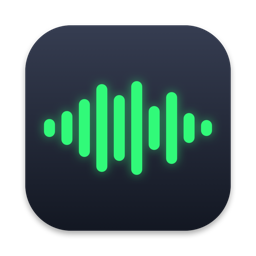
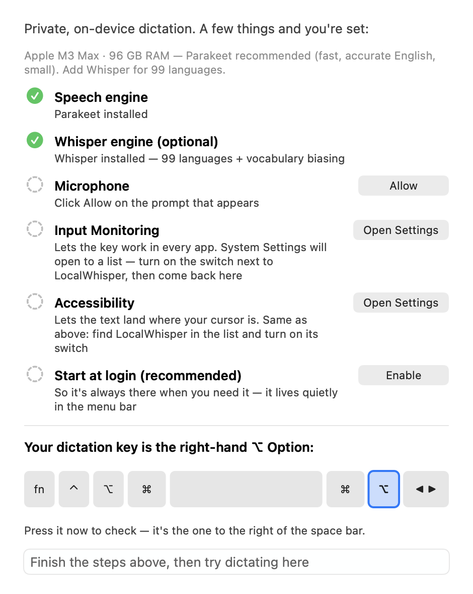

Talk instead of type.
Hold one key on your Mac, say what you mean, and let go. Your words appear wherever you were typing. Free, private, and nothing you say ever leaves your computer.
Download for Mac — freeFor Macs with Apple Silicon (M1 or newer), macOS 14 or later · Which Mac do I have?
Your download has started. Next, open InsideVoice.dmg from your Downloads folder and drag Inside Voice onto Applications. The three steps are below.
Inside Voice runs on a Mac. It looks like you're on another device. Send yourself this page and open it on your Mac to download.
Link copied.
Nothing leaves your Mac
The speech engine runs on your own computer. It works exactly the same with the Wi-Fi off.
Nothing is saved
Your voice is never recorded to a file, and nothing you say is logged or kept.
Free, no account
No subscription, no sign-up, no ads. Free for everyone, at home or at work.
Get started in three steps
About five minutes, most of it waiting for a download.
-
Download and install
Click the green Download button. Open the file it saves, InsideVoice.dmg, from your Downloads folder. A small window opens: drag the Inside Voice icon onto the Applications folder beside it.
-
Open it and follow the setup
Open Inside Voice from your Applications folder. It's signed and checked by Apple, so it opens like any other app. A setup window walks you through the rest: a one-time download of the speech engine (669 MB, a few minutes on home Wi-Fi), then three permissions macOS asks you to approve. What are those for?

-
Hold the right Option key and talk
Click wherever you want to type. Hold down the Option ⌥ key to the right of the space bar, speak, and let go. Your words appear a moment later.
Saying a lot? While holding the right Option key, tap the right Command ⌘ key next to it, then let go of both. It keeps listening hands-free until you tap the right Option key again.
After setup, Inside Voice has no window. It lives in the menu bar at the top right of your screen, as a small waveform circle. Click it for settings.
Three permissions, in plain words
They sound alarming. They're the same ones any dictation or keyboard-shortcut app needs, and Inside Voice never sends anything over the internet.
- Microphone
- To hear you while you hold the key.
- Input Monitoring
- To notice when you hold the right Option key, even while you're working in another app.
- Accessibility
- To type your words into the app you're using.
The setup window opens the right page of System Settings for each one. Turn on the switch next to Inside Voice, then come back.
What people use it for
Anywhere you can click and type: mail, documents, chat apps, web pages, notes.
Questions
Not answered here? The User Guide covers everything.
Which Mac do I have? Will it work on mine?
Inside Voice needs a Mac with Apple Silicon (M1, M2, M3, M4, or newer) on macOS 14 Sonoma or later.
To check: click the Apple menu at the top left of your screen, then About This Mac. If the "Chip" line says Apple M-something, you're set. If it says "Processor … Intel", Inside Voice won't run on that Mac, sorry.
Is it really free?
Yes, for everyone, including at work and on as many Macs as you like. No trial, no account, no ads. It's a personal project by Bill McIntyre, built to show that useful AI can run entirely on your own computer.
Is it safe to install?
The app is signed by its developer and checked by Apple for malicious software before every release (Apple calls this notarization). That's why it opens without warnings.
Do I need the internet?
Only once, to download the speech engine during setup. After that it never uses the internet. Try it with the Wi-Fi off.
What languages does it understand?
English and 24 other European languages out of the box. An optional second engine, offered in the setup window, adds 99 languages including Japanese, Chinese, Korean, and Hindi.
Does it get names and special words right?
Add names, jargon, and product names to a personal word list from the menu bar icon, and they come out right. The User Guide explains how.
The download link took me to GitHub. What is that?
GitHub is a website where software is built and shared. Inside Voice's downloads and documentation live there. You don't need an account or any technical know-how; the Download button on this page is all you need.
How do I update it?
Download it again from this page and drag the new app onto the old one in Applications (choose Replace). Your settings carry over.
How do I remove it?
Drag Inside Voice from Applications to the Trash. To also delete the downloaded speech engine and free the space, open Finder, choose Go → Go to Folder…, paste ~/Library/Application Support/Inside Voice, and delete that folder.
Something isn't working. Where do I get help?
The troubleshooting guide covers the common problems in plain language. To ask a question or report a problem, open an issue on GitHub (it needs a free account).
Give it a try
Free, private, and five minutes from now you could be talking to your Mac.
Download for Mac — freeApple Silicon Mac · macOS 14 or later · 4 MB, plus a one-time 669 MB speech engine